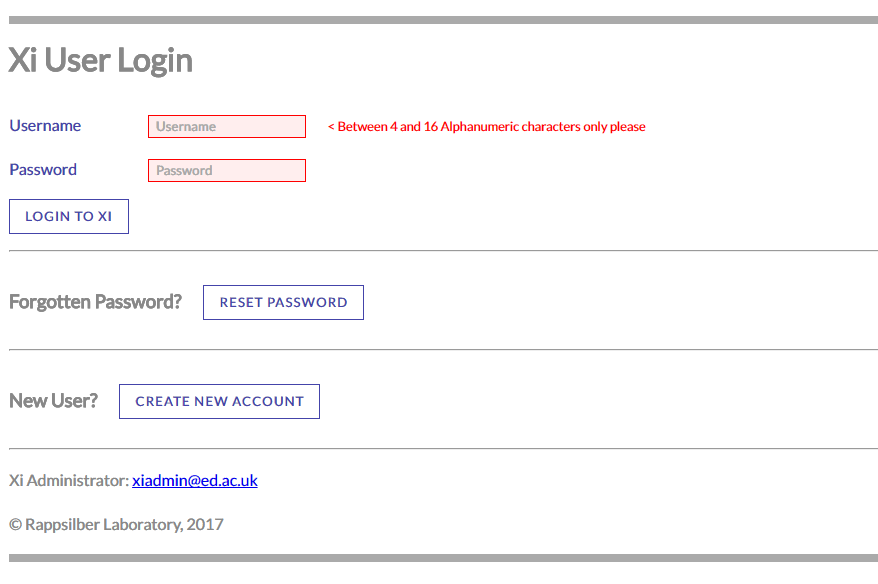

The Xi login system consists of a number of pages to control user logins, password resets, adding new users and changing existing user details.
Go to the Create New Xi User Account page and pick a username, email address and password combination to be used for your Xi account. Complete the recaptcha form (used to prevent automatic registering), and then press the Create My Xi Account button. If either the username or email address are already in use you'll be notified and asked to pick alternatives. Otherwise you will get a success message on-screen, and you'll receive an email stating a Xi administrator will shortly authorise your account.

Log in using the username and password combination you chose when creating your account. You'll then be taken to the Xi Search History page.
Forgotten passwords can be reset by selecting Click Here next to the 'Forgotten Password?' label on the log in page. You'll then see a page asking for either your email or Xi username, along with a recaptacha dialog. Complete these details and press the Get Email with Reset Password Link button. You will then receive an email which contains a unique time-limited link to a page from which your password can be reset. On this page simply choose a new password and press Set New Password.
This process may seem convoluted but it ensures only the owner of the account's registered email (i.e. you) can set a new password. Also, until the password reset is performed, the old password remains in force, so no-one can disable your account by typing in your username/email and requesting new passwords.
Change your details once logged in by pressing the User Admin button on the Xi Search History page (or access directly at userGUI/userAdmin.html). For regular users the only editable item is the email address. This can be changed and, if validated, then set by pressing the Update User button. A password reset can be requested by pressing Reset Password. Finally, your account can be deactivated by pressing Delete User. This can only be undone by appealing to a Xi Administrator - a dialog asks if you are completely sure.
If you have administrator privileges the above operations can be performed on any members of the entire Xi user base. Also, the User Group of each user can be changed, with each group having different privileges. Currently these are: